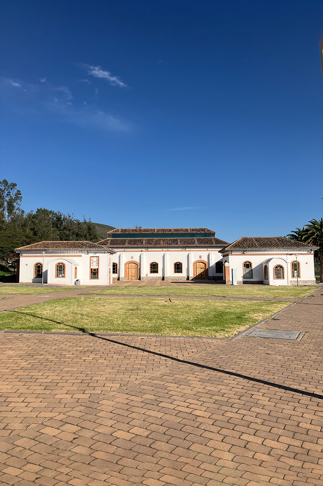

EPIC Junior Ambato
Escuela de Computación Científica para Estudiantes de Secundaria
Programa
Instructor: Ángel Rodríguez (Yachay Tech) · Equipo de soporte: maestrantes y estudiantes de Yachay Tech, USFQ y EPN.
| Horario | Miércoles 14 de octubre de 2026 |
|---|---|
| JORNADA VESPERTINA | |
| 13h45 – 14h00 | Llegada & Registro de Asistencia |
| 14h00 – 14h10 | Bienvenida y presentación de EPIC Junior |
| 14h10 – 15h00 | Charla: Entre estrellas y agujeros negrosÁngel Rodríguez |
| 15h00 – 15h45 | Tutorial dinámico de programación en Python sobre cuerpos compactosÁngel Rodríguez + Equipo de Soporte |
| 15h45 – 16h00 | Mini charla: la OEAA e invitación a participar en las Olimpiadas de Astronomía y Astrofísica |
Organizan


📖 Cómo usar este libro
Usa el menú de la izquierda para moverte entre las actividades. Cada una indica si es una Charla, un Simulador (se abre directo en el navegador) o un Notebook (se abre en Google Colab con el botón amarillo). Los archivos de datos Datos se descargan a tu computadora y luego se suben al notebook.Entre estrellas y agujeros negros
Evolución estelar y objetos compactos: cómo nacen, viven y mueren las estrellas, y qué dejan atrás — enanas blancas, estrellas de neutrones y agujeros negros.
🕳️ Charla
14h10 – 15h00 Ángel Rodríguez, Maestría en Física, Yachay TechRecorrido por la vida de una estrella: por qué brillan, qué decide su destino, y qué queda cuando se les acaba el combustible.
Entre estrellas y agujeros negros
Diapositivas de la charla. Se publican el mismo día del evento.
Tutorial de Python: cuerpos compactos
Primero exploramos el diagrama H–R con un simulador, y luego lo reconstruimos nosotros mismos en Python con datos de estrellas reales.
🔭 Paso 1 — Explora el cielo
15h00 – 15h10Antes de escribir una sola línea de código, juega con el explorador estelar: haz clic en varias estrellas y fíjate en su temperatura, su luminosidad y su radio.
Explorador Estelar — Diagrama H–R
Selecciona estrellas del diagrama de Hertzsprung–Russell y observa cómo cambian su temperatura, luminosidad, radio y clase espectral. Desarrollado por cPhys+ en Yachay Tech.
🐍 Paso 2 — Programa tú mismo
15h10 – 15h45 · Google Colab Ángel Rodríguez + Equipo de SoportePython como calculadora (el tamaño de un agujero negro y la densidad de una estrella de neutrones), lectura de un catálogo de estrellas reales, y construcción del diagrama H–R desde cero. Termina con una tarea sobre objetos compactos.
entre_estrellas_y_agujeros_negros.ipynb
Tres temas y una tarea. No hay que instalar nada: se abre y se ejecuta directo en el navegador.
estrellas_hr.txt
Catálogo de 23 estrellas reales con su temperatura, su luminosidad y su tipo. Se usa en el Tema 2 del notebook.
objetos_compactos.txt
Diez enanas blancas, estrellas de neutrones y agujeros negros con su masa y su radio. Se usa en la tarea final.
📝 La tarea
Al final del notebook hay tres ejercicios de programación para completar: calcular el radio de Schwarzschild de todos los agujeros negros a la vez, calcular la densidad de cada objeto, y graficar masa contra tamaño. Cada línea por completar está marcada con ✏️ TAREA y una pista.
Olimpiadas Ecuatorianas de Astronomía y Astrofísica
Mini charla de cierre e invitación a participar.
La OEAA es una competencia nacional para estudiantes de Básica Superior y Bachillerato. De ahí salen las y los representantes del Ecuador en la Olimpiada Latinoamericana de Astronomía y Astronáutica (OLAA) y en la International Olympiad on Astronomy and Astrophysics (IOAA). Varias personas del equipo de soporte de hoy empezaron exactamente así.
Sigue a la OEAA
Fechas de convocatoria, material de preparación y resultados se publican en su Instagram.
Entrenamiento Hands-On Astro
Grupo dedicado al entrenamiento de estudiantes de secundaria rumbo a las olimpiadas de astronomía y astrofísica.
Conoce la Universidad Yachay Tech

La Universidad Yachay Tech es una universidad pública de investigación ubicada en San Miguel de Urcuquí, Imbabura, dentro de la Ciudad del Conocimiento Yachay. Fundada en 2014, se enfoca en ciencia y tecnología, con escuelas de Física y Nanotecnología, Matemática y Computación, Ciencias Biológicas, Ciencias Químicas y Ciencias de la Tierra. Su modelo educativo combina formación académica con investigación aplicada, y sus estudiantes y docentes participan activamente en proyectos científicos nacionales e internacionales, incluyendo la organización de EPIC.
🔗 Visita yachaytech.edu.ecEscuela de Ciencias Físicas y Nanotecnología
La Escuela de Ciencias Físicas y Nanotecnología de Yachay Tech agrupa los departamentos de Física y Nanotecnología, y desarrolla investigación fundamental y aplicada en ambas áreas. La carrera de Física cubre disciplinas básicas desde perspectivas teóricas y experimentales, mientras que la Ingeniería en Nanotecnología forma profesionales con una base sólida en física y matemática, con un enfoque interdisciplinario que se proyecta hacia la química, la biología, la ciencia de materiales y la ingeniería. La Escuela también ofrece la Maestría en Física Aplicada con mención en Nanotecnología, con un fuerte componente de interdisciplinariedad, investigación, innovación y liderazgo.
🔗 Más sobre la Escuela